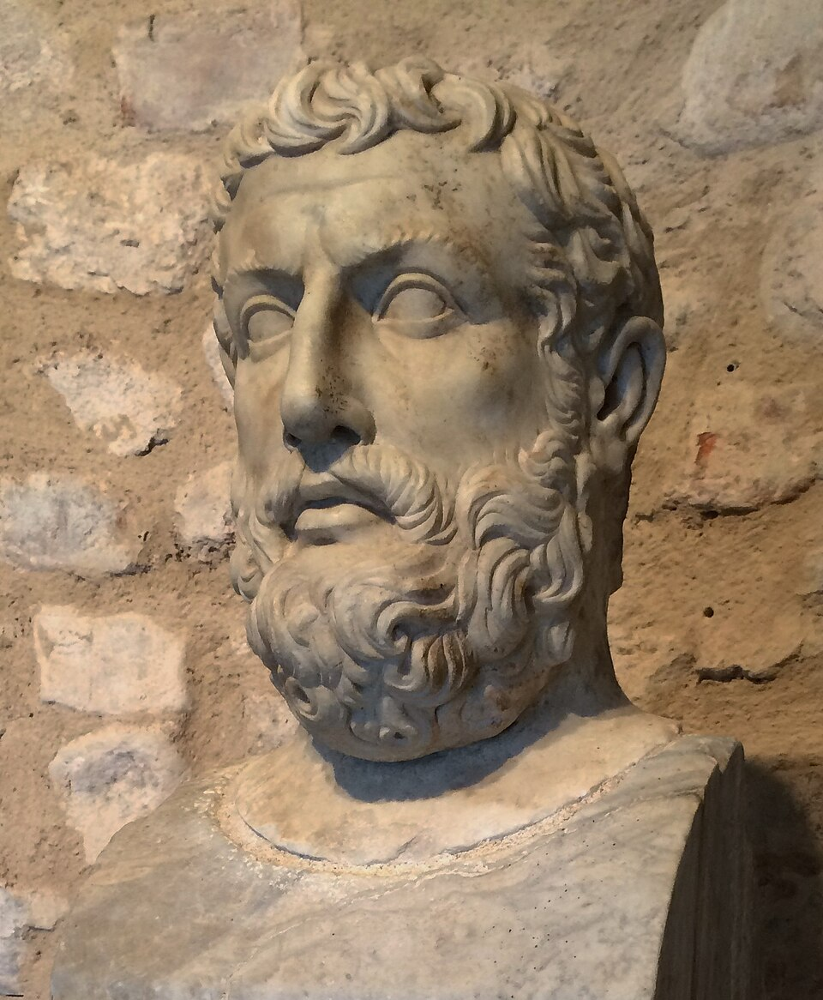

Who Was Parmenides of Elea?
Parmenides of Elea was a Presocratic Greek philosopher who lived in the early fifth century BCE. He came from Elea, a Greek settlement in southern Italy, and became one of the most influential thinkers in the history of ancient Greek philosophy.
Parmenides is especially famous for his investigation of being, reality, truth, and change. His surviving philosophical fragments present a difficult argument about what can genuinely be thought and said. At the center of his philosophy is the question of what it means for something to be.
Parmenides' philosophy had a profound effect on later Greek thinkers. His arguments forced philosophers to reconsider apparently obvious ideas about coming into existence, destruction, movement, plurality, and change. His influence can be seen particularly clearly in later Presocratic philosophy and in the development of metaphysical inquiry.
Parmenides of Elea: Quick Facts
- Name — Parmenides of Elea
- Period — Early fifth century BCE
- From — Elea, in southern Italy
- Philosophical tradition — Presocratic and Eleatic philosophy
- Known for — Philosophy of being, reality, truth, change, and philosophical reasoning
- Major work — A philosophical poem traditionally known as On Nature
- Surviving writings — Only fragments and quotations preserved by later authors
- Major concepts — Being, non-being, truth, opinion, necessity, and change
- Associated tradition — Eleatic philosophy
- Major influence — Greek metaphysics and later philosophical debates about reality and change
Parmenides and Ancient Greek Philosophy

Parmenides belongs to the generation of Presocratic philosophers who investigated the nature of reality before and alongside the development of classical Greek philosophy. He lived in the Greek-speaking world of southern Italy, where philosophical communities developed alongside those of mainland Greece and Ionia.
Earlier thinkers such as Thales, Anaximander, and Anaximenes had searched for fundamental principles that could explain the natural world. Parmenides approached the problem differently. Instead of beginning simply by asking what physical substance everything comes from, he examined what must be true about anything that can genuinely be thought or said to exist.
His philosophical method therefore shifted attention toward questions about being itself. This helped make questions about existence and reality central to the later development of metaphysics.
What Is Parmenides Famous For?
Parmenides is most famous for his philosophical argument about being and non-being. He argues that genuine inquiry must follow what can be thought and expressed consistently, while the supposed path of what-is-not cannot provide a legitimate object of knowledge.
His arguments lead to striking conclusions about what is. In the surviving central portion of his poem, what-is is described as ungenerated, imperishable, whole, continuous, and unchanging.
Parmenides is therefore frequently associated with the philosophical problem of change. If something comes into existence, where did it come from? If it passes away, does it become what is not? Parmenides' reasoning challenges the assumption that coming-to-be and passing-away can be straightforwardly explained.
His arguments became one of the major turning points in Presocratic philosophy because later thinkers had to respond to the problems his reasoning raised.
What Was Parmenides' Philosophy?
The central concern of Parmenides' philosophy is the relationship between being, thought, and truth. His poem presents a philosophical investigation into the possible paths of inquiry and asks what can genuinely be known.
Parmenides distinguishes between what can be established through reason and what belongs to ordinary human opinion. The philosophical path requires careful attention to what it means for something to be.
His reasoning is difficult to interpret, and scholars disagree about several major aspects of his philosophy. In particular, there is continuing debate about whether Parmenides should be understood as a strict monist who denied genuine plurality and change, or whether his arguments should be interpreted in a more qualified way.
What is clear is that Parmenides made the question of being central to philosophical investigation and forced later thinkers to confront the logical consequences of claims about existence and change.
Parmenides' Theory of Being
The concept of being is at the heart of Parmenides' philosophy. His argument begins from the question of what it means to say that something is.
Parmenides presents the path of what-is as the path of inquiry that can be followed, while the path of what-is-not is treated as impossible to know or express coherently.
From this starting point, Parmenides develops a series of arguments concerning the nature of what-is. If what-is could come into being, then there would have to be some prior state from which it came. But if that prior state were what-is-not, Parmenides argues that it could not serve as a genuine source of being.
Similar reasoning is applied to destruction. If what-is were to cease being, it would have to pass into what-is-not. Parmenides rejects this possibility within the logic of his argument.
Parmenides on Being and Non-Being
One of the most important aspects of Parmenides' philosophy is his distinction between being and non-being.
For Parmenides, what-is can be thought and spoken of, whereas what-is-not cannot provide a genuine object of thought or knowledge. This creates a fundamental restriction on philosophical inquiry: thought must concern what can be.
The argument is not simply the ordinary statement that something exists and something else does not exist. Parmenides is examining the deeper logical conditions involved when philosophers speak about existence and non-existence.
This is one reason his philosophy became so important for later discussions of ontology and metaphysics.
What Is the Way of Truth in Parmenides?
The Way of Truth, traditionally called Aletheia, is the central philosophical portion of Parmenides' surviving poem.
In this section, Parmenides develops arguments about what-is and what cannot be. The reasoning leads to a description of being as ungenerated, imperishable, whole, continuous, and unchanging.
The Way of Truth is therefore concerned not merely with collecting information about the physical world. It asks what must be true of reality if philosophical thought is to remain coherent.
The arguments of the Way of Truth became enormously influential because they challenged earlier explanations of nature and created problems that later Presocratic philosophers attempted to solve.
What Is the Way of Opinion in Parmenides?
The second major part of Parmenides' poem is traditionally known as the Way of Opinion, or Doxa.
This part of the poem presents a cosmological account involving principles traditionally associated with light and night. The surviving fragments indicate that Parmenides' cosmology addressed subjects including the heavens, the Earth, the Sun, Moon, stars, and other aspects of the natural world.
The relationship between the Way of Truth and the Way of Opinion is one of the most debated questions in Parmenidean scholarship.
It is therefore safer to avoid the oversimplified claim that Parmenides simply wrote one section saying reality is real and another saying the entire physical world is an illusion. The exact philosophical status of the cosmology remains a matter of scholarly interpretation.
Parmenides and the Problem of Change
One of Parmenides' most important philosophical problems concerns change.
Ordinary experience seems to show that things come into existence, disappear, move, and change their properties. Parmenides' arguments question whether such processes are ultimately compatible with the requirements of genuine being.
If something comes into being, it appears necessary to explain where it came from. If it came from what-is-not, Parmenides' reasoning rules this out because what-is-not cannot serve as a genuine source. If it came from what-is, then it was already there in some sense.
Similar reasoning applies to destruction. If what-is ceased to be, then it would have to become what-is-not. Parmenides' argument rejects this transition.
These arguments do not merely say that change is difficult to observe. They challenge the underlying assumptions about existence that make change possible.
Did Parmenides Believe That Change Is Impossible?
Parmenides is traditionally interpreted as arguing that genuine being cannot change. His central argument describes what-is as ungenerated, imperishable, continuous, and unmoving.
However, the broader claim that Parmenides simply believed that everything humans experience is an illusion requires caution.
His poem contains a substantial cosmological section dealing with the world of ordinary appearances. Scholars disagree about exactly how this section should be understood and how it relates to the arguments of the Way of Truth.
The most reliable description is therefore that Parmenides' philosophical arguments create a serious challenge for ordinary conceptions of coming-to-be, destruction, motion, and change.
Was Parmenides a Monist?
Parmenides is often described as a metaphysical monist, meaning that reality is interpreted as fundamentally one rather than genuinely composed of independent beings.
Traditional interpretations emphasize Parmenides' descriptions of being as whole, continuous, and indivisible. On this reading, genuine reality cannot contain genuine divisions because division would require something that is not.
However, modern scholarship does not treat the precise meaning of Parmenidean monism as completely settled.
Some interpretations understand Parmenides as defending a strict monism, while others argue that his primary concern is the logical structure of claims about being rather than the simple assertion that there is numerically only one physical object.
Parmenides' Main Arguments About Reality
Parmenides' central arguments can be summarized through several connected claims.
Being Cannot Come From Non-Being
If something genuinely comes into existence, it would seem to come either from being or from non-being. Parmenides argues that non-being cannot be the source of being because what-is-not cannot provide a genuine object of thought or explanation.
Being Cannot Pass Into Non-Being
If something genuinely ceases to be, it would seem to pass into non-being. Parmenides rejects this possibility within his argument about what-is.
Being Is Ungenerated
Because being cannot come from what-is-not, Parmenides argues that it cannot have come into existence in the ordinary sense.
Being Is Imperishable
Because being cannot become what-is-not, Parmenides argues that it cannot genuinely perish.
Being Is Continuous
If what-is is genuinely being, Parmenides' reasoning leaves no room for a genuine gap of non-being separating one part from another.
Being Does Not Undergo Genuine Change
Change would require being to become something that it previously was not. Parmenides' arguments therefore place severe restrictions on the possibility of genuine change.
Parmenides on Truth and Human Opinion
Parmenides distinguishes philosophical truth from the opinions through which human beings ordinarily interpret the world.
The Way of Truth follows what can be established through rigorous reasoning about being. The Way of Opinion presents the account of how mortals ordinarily understand the world and includes a cosmological explanation.
This distinction is important because Parmenides is not merely offering a physical theory. He is also examining the conditions under which human beings can claim to know something.
The contrast between truth and opinion became an important theme in later Greek philosophy, particularly in discussions concerning knowledge, appearance, reason, and reality.
Parmenides' On Nature: What Did He Write?
Parmenides is traditionally said to have written a philosophical poem known as On Nature. However, the title is probably not securely established as the original title of his work.
No complete manuscript of Parmenides' poem survives. Instead, scholars reconstruct portions of the poem from quotations and testimonia preserved by later ancient authors.
The surviving material is usually organized into a Proem, the Way of Truth, and the Way of Opinion.
Because the original poem is incomplete, interpretations of Parmenides must take into account the fragmentary condition of the evidence.
What Is Parmenides' Philosophical Poem About?
Parmenides' poem begins with a dramatic journey in which the speaker travels toward a goddess who reveals the different paths of inquiry.
The poetic framework is important because Parmenides did not present his philosophy as a modern academic treatise. His arguments are expressed through epic-style poetry, symbolism, and a structured philosophical revelation.
The central philosophical material then turns toward questions about being, thought, truth, and the ways in which mortals understand the world.
Parmenides and the Eleatic School of Philosophy
Parmenides is traditionally regarded as one of the central figures associated with Eleatic philosophy, a philosophical tradition connected with Elea in southern Italy.
Zeno of Elea is especially associated with defending Parmenidean positions through arguments concerning motion, plurality, and change. Melissus of Samos is another important figure traditionally connected with the Eleatic tradition.
The exact boundaries of the Eleatic school are debated, and not every thinker historically associated with it necessarily shared an identical philosophical position.
Nevertheless, the Eleatic tradition is important because it made questions about being, unity, plurality, and change central to Presocratic philosophy.
Parmenides and Heraclitus: Being vs. Change
Parmenides and Heraclitus are often presented as philosophical opposites because their surviving traditions are strongly associated with different approaches to change.
Heraclitus is famous for emphasizing change, conflict, and the ordered structure of becoming. Parmenides, by contrast, develops arguments that place strict limits on genuine change and coming-to-be.
The familiar textbook contrast between “Heraclitus says everything changes” and “Parmenides says nothing changes” is useful as an introduction, but it oversimplifies both philosophers.
Their philosophies are more complicated, and there is no need to reduce Parmenides' arguments to a simple rejection of everything perceived by the senses.
Parmenides and Zeno of Elea
Zeno of Elea is traditionally described as a defender of Parmenides' philosophy.
Zeno became famous for arguments and paradoxes concerning motion and plurality. His arguments challenge apparently straightforward assumptions about movement and division.
The relationship between Parmenides and Zeno is important because Zeno's arguments demonstrate how the problems raised by Parmenides could be developed through increasingly sophisticated reasoning.
Later philosophers continued to debate the logical and mathematical issues raised by the Eleatic arguments.
Parmenides' Influence on Plato
Parmenides had a major influence on later Greek philosophy, including the philosophy of Plato.
Plato takes the Eleatic challenge seriously in several dialogues, especially the Parmenides, where the character Parmenides examines difficult problems concerning unity, plurality, and the theory of Forms.
The historical Parmenides and Plato's literary character should not be treated as identical. Plato's dialogue uses Parmenides as part of a sophisticated philosophical examination rather than providing a straightforward biography of the historical philosopher.
Parmenidean questions about being and intelligibility nevertheless became deeply important to the development of Platonic metaphysics.
Why Is Parmenides Important to Metaphysics?
Parmenides is frequently described as one of the founders of metaphysical inquiry because he made the nature of being itself a central philosophical problem.
Instead of asking only what physical substance makes up the world, Parmenides asks what must be true of anything that genuinely is.
This shift toward questions about existence, identity, unity, plurality, and change became fundamental to later metaphysics.
Later philosophers repeatedly returned to problems that Parmenides had helped formulate: What does it mean for something to exist? Can something come from nothing? Can being change? How are thought and reality related?
Parmenides and the Philosophy of Existence
Modern philosophers often describe the study of being and existence as ontology. Although the term itself belongs to a much later philosophical vocabulary, Parmenides' investigation is closely connected with questions that later became central to ontology.
His central concern is not simply whether particular objects exist. He investigates the meaning and logical consequences of being itself.
This is why Parmenides remains important in discussions about existence, identity, necessity, possibility, and the structure of reality.
Parmenides on Reason, Thought, and Knowledge
Parmenides' philosophy is also concerned with the relationship between thought and reality.
His poem presents philosophical reasoning as a means of distinguishing what can genuinely be known from the confused opinions of mortals.
This does not mean that Parmenides developed a modern scientific theory of knowledge. Instead, his arguments establish a connection between the possibility of thinking something and the possibility of what is being thought.
The resulting problems became extremely influential for later philosophers concerned with the relationship between thought, language, and reality.
Parmenides' Main Philosophical Ideas
Although the surviving evidence is fragmentary, several themes are consistently central to discussions of Parmenides.
Being Is the Central Object of Inquiry
Parmenides makes the question of what it means to be central to philosophical investigation.
Non-Being Cannot Be a Genuine Object of Thought
His argument rejects the path of what-is-not as an intelligible route to knowledge.
Being Is Ungenerated
Being cannot genuinely come into existence from non-being within Parmenides' argument.
Being Is Imperishable
Being cannot genuinely pass into non-being.
Being Is Continuous
Genuine being cannot contain gaps of non-being that divide it.
Change Creates a Philosophical Problem
Parmenides' reasoning challenges ordinary assumptions about coming to be, passing away, and alteration.
Reason Must Guide Philosophical Inquiry
Parmenides emphasizes a rational path of inquiry rather than relying solely on ordinary appearances.
What Do We Actually Know About Parmenides?
Studying Parmenides requires particular care because his original philosophical poem has not survived in complete form.
Relatively Well-Attested
- Parmenides was associated with the city of Elea.
- He was an important Presocratic Greek philosopher.
- His philosophy centered on being, truth, and the nature of reality.
- A philosophical poem traditionally known as On Nature is attributed to him.
- Important fragments of the poem survive through quotations and reports by later authors.
- His arguments had a major influence on later Greek philosophy.
Traditionally Attributed or Reconstructed
- The exact organization and wording of the original poem.
- The precise relationship between the Way of Truth and the Way of Opinion.
- The exact meaning of Parmenides' cosmological account.
Still Debated by Scholars
- Whether Parmenides should be interpreted as a strict metaphysical monist.
- Whether he regarded the everyday world as completely unreal.
- How exactly his arguments about being should be reconstructed.
- How his cosmology relates to his arguments in the Way of Truth.
Was Parmenides the Father of Metaphysics?
Parmenides is sometimes called the father of metaphysics because of the importance he gave to questions about being and reality.
This title should be understood as a historical description rather than an ancient title that Parmenides himself used.
His philosophical investigation is nevertheless extraordinarily important for metaphysics because it asks what must be true of reality independently of ordinary assumptions about physical change.
Later philosophers developed radically different answers to these problems, but Parmenides helped establish the questions themselves as central philosophical problems.
Parmenides' Influence on Greek Philosophy
Parmenides' influence extended far beyond the Eleatic tradition. His arguments created problems that later Presocratic philosophers had to address when developing their own accounts of nature.
Thinkers such as Empedocles, Anaxagoras, and the Atomists developed theories that attempted, in different ways, to explain change while avoiding the problem of something simply coming from absolute nothing.
Parmenides therefore played an important role in transforming Presocratic philosophy. Later theories of nature increasingly had to account for the logical difficulties surrounding coming-to-be, destruction, plurality, and change.
Parmenides of Elea Explained Simply
Parmenides was an ancient Greek philosopher who asked a very basic but extremely difficult question: What does it really mean for something to be?
His argument begins with the idea that what-is-not cannot be a genuine object of thought or explanation. From this, he develops a powerful argument that genuine being cannot simply come into existence or disappear into non-being.
This creates a major problem for ordinary ideas about change. Things appear to be born, die, move, and transform, yet Parmenides' reasoning suggests that genuine being cannot undergo these processes in the straightforward way we normally imagine.
- Main question: What does it mean for something to be?
- Central concept: Being.
- Important contrast: Being and non-being.
- Major problem: How can genuine change and coming-to-be be possible?
- Major text: A philosophical poem traditionally called On Nature.
- Tradition: Presocratic and Eleatic philosophy.
- Historical importance: Parmenides helped make questions about being and reality central to Greek metaphysics.
A Famous Idea Associated with Parmenides
“It is necessary to say and to think that Being is.”
Frequently Asked Questions About Parmenides
Who was Parmenides of Elea?
Parmenides of Elea was a Presocratic Greek philosopher from Elea in southern Italy. He is especially known for his arguments concerning being, reality, truth, and change.
What is Parmenides famous for?
Parmenides is famous for his philosophy of being and his arguments about what can genuinely be thought and said to exist. His philosophy also presents a major challenge to ordinary ideas about change and coming-to-be.
What did Parmenides believe?
Parmenides argued that genuine being cannot come from non-being or pass into non-being. His surviving arguments describe what-is as ungenerated, imperishable, whole, continuous, and unchanging.
What is Parmenides' theory of being?
Parmenides' theory of being centers on the claim that what-is must be thought as being rather than as non-being. His arguments then derive several characteristics of genuine being, including its ungeneratedness, imperishability, continuity, and lack of genuine change.
Did Parmenides believe nothing changes?
Parmenides' arguments strongly challenge genuine change, coming-to-be, and destruction. However, the exact interpretation of his position is debated, particularly concerning how his Way of Truth relates to the cosmology presented in the Way of Opinion.
What is the Way of Truth in Parmenides?
The Way of Truth is the central philosophical section of Parmenides' poem. It develops arguments concerning being, non-being, truth, and the conditions of genuine philosophical inquiry.
What is the Way of Opinion in Parmenides?
The Way of Opinion presents a cosmological account traditionally associated with light and night. The surviving fragments indicate that it discusses the heavens, Earth, Sun, Moon, stars, and other aspects of the cosmos.
Was Parmenides a monist?
Parmenides is traditionally interpreted as a metaphysical monist, but the exact meaning of his position remains debated. Scholars disagree about whether he should be understood as asserting strict numerical unity or making a more fundamental argument about being and intelligibility.
What did Parmenides write?
Parmenides is traditionally associated with a philosophical poem called On Nature. The original work does not survive in full; only fragments and quotations preserved by later authors remain.
Did Parmenides write a book called On Nature?
The work traditionally called On Nature is attributed to Parmenides, but the title itself is probably not securely established as the original title of his poem.
Who was influenced by Parmenides?
Parmenides influenced the Eleatic tradition, especially Zeno of Elea, and had a major impact on later Presocratic philosophers and Plato. His arguments also became important for the development of Greek metaphysics.
What is the Eleatic school?
The Eleatic tradition is associated with philosophers connected to Elea and is especially known for arguments concerning being, unity, plurality, and change. Parmenides and Zeno are its most famous representatives.
How did Parmenides influence Plato?
Parmenidean questions about being, unity, plurality, and intelligible reality became important for Plato. Plato also used a character named Parmenides in his dialogue Parmenides to examine difficult philosophical problems.
Why is Parmenides important in philosophy?
Parmenides is important because he made being and the conditions of genuine thought central philosophical problems. His arguments forced later thinkers to reconsider their explanations of change, plurality, and reality.
Related Ancient Greek Philosophers
Parmenides belongs to the wider tradition of Presocratic and Ancient Greek philosophy. Explore thinkers who developed different answers to questions about nature, being, change, knowledge, and reality.
Philosophy Branches Connected to Parmenides
Parmenides' investigation into being, existence, reality, and the possibility of knowledge connects especially strongly with metaphysics and epistemology. His emphasis on reasoning also raises important questions for logic.
Why Parmenides Still Matters
Parmenides remains one of the most important philosophers of ancient Greece because he transformed a seemingly simple question into a profound philosophical problem: what does it mean for something to be?
His arguments about being and non-being challenged ordinary assumptions about coming-to-be, destruction, motion, plurality, and change. Later philosophers could not simply ignore these problems; they had to develop new accounts of reality capable of responding to the challenge.
From Presocratic natural philosophy to Plato and the later development of metaphysics, Parmenides' questions continued to influence the history of philosophy. His surviving fragments remain difficult, but precisely because of their difficulty, they continue to generate philosophical debate about being, truth, reason, and reality.
Explore Great Philosophers